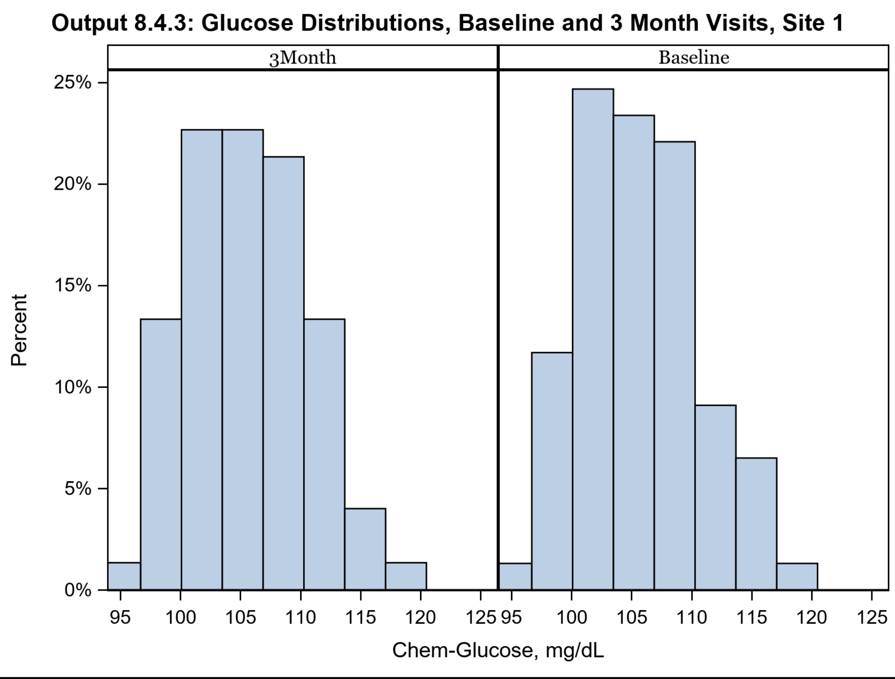
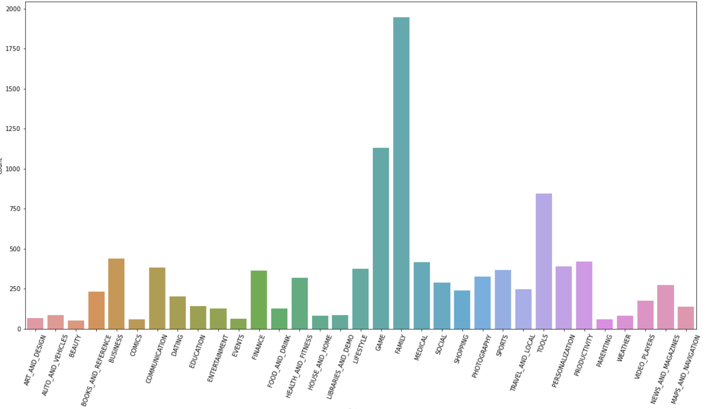

Clinical trial study in SAS 9.4 first we clean and merge data diffrent file such as
txt, SAS, Excel, dat files in the data step and in the proc step validate the data and create output
with diffrent plot and table create visual representation of data with output ODS files
such as pdf, rtf, powerpoint, and PNG file. Also, use SAS macro variable in SAS 9.4 that allows
dynamically modify the SAS Program through symbolic substitution.
The main goal of this project is data handling such as cleansing, importing, validating, and exporting; manipulating,subsetting, and grouping
,mearging and appending data sets; basic report and summary reporting; and code debugging.

Using the R-Code to analyzed heart failure data apply data visualization technique with the help of various R-library
such as ggplot2, rpart, randomForest, dplyr. Also, try to find best model using Regression analysis including multiple logistic regression model
with the help of logistic function, correlation matrix, model building methods such as Forward selection, Backward elimination,
stepwise selection, Akaike information criterion (AIC), and Bayesian Information criterion (BIC).

Data Visualization in Python using diffrent Python librarys such as pandas, numpy, matplotlib, and seaborn. Data cleansing, analysis,
and manage the dataset to using diffrent statistical analytical technique.

{kind=link}